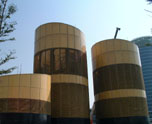

呂清夫 撰文

世界各地的大城常有一些圖像令人過目難忘，如紐約的自由女神﹑巴黎的鐵塔﹑哥本哈根的美人魚﹑新加坡的魚尾獅……等等，它們不但凝聚了居民的歷史感情，也表現了地方的文化風采，對遊客來說，更是當地最好的地標與拍照的對象。●看藝術品，你就知道這一站是哪裡 在過去的台灣，類此圖像似乎並不多見，不知是不是因為這樣，才使大家在都市中來匆匆去匆匆，甚至橫衝直撞，因為實在沒什麼光景值得讓人佇足流連，都市除了是討生活的地方，似乎再也沒有什麼了。至於一些光復後重建﹑新建的火車站﹑公有建築，也都顯得枯燥乏味，很像部隊的營房，除了可以用之外，似乎沒什麼可觀的了。不過，近年有了改觀，我們看台北市的捷運車站，都蓋得比光復後的火車站像樣，有品味。等到步入扶梯﹑月台以後，你更可以不期而遇大大小小的藝術品。只要看到那些藝術品，你或許就知道，這一站是哪裡。當你看到拈花微笑的「大黑手」時，便知台大醫院到了，當你看到天花板掛著琳瑯滿目的造型時，便到了古亭站，當你發現很多發光的色塊令人眼睛為之一亮時，中和線就已經到了終點，所以都市的景觀已經起了寧靜的革命。沒有幾年，為什麼變這麼多？原來近年立法院終於通過了一個法條，規定今後的公有建築物必須撥出建築物造價的百分之一，重大公共工程也要撥出適當比例的經費，用來設置藝術品﹑美化環境，此即所謂的公共藝術（「文化藝術獎助條例」第九條）。如果沒有撥款設置藝術品，便是違法，便要罰鍰，而且要罰到做完為止，換句話說，公有建築不美也是罪。但是對於此事，有些單位似乎還在觀望，大學校園除了清華大學﹑中醫研究所等校之外，多不積極或違法而不自知。在地方政府中，以台北市政府最為努力，他們還特別規定，公有建築如果沒有撥出建築物造價的百分之一設置藝術品，就不發給建築執照。同時如果沒有設置完成，則不發給使用執照。不僅如此，市政府還宣佈一九九七年為「公共藝術元年」，這簡直是都市新樂園的元年。當時在台北車站﹑萬華車站﹑二號公園﹑迪化與內湖兩污水處理場的回饋公園，都已編列公共藝術的預算。直至最近，仍有公園路燈管理處在審理胡適公園﹑大安公園等十一個公園的公共藝術設置案。不過最有績效的單位還是捷運局，他們興辦公共藝術已經有十年的歲月。● 錢都流到藝術家的口袋了嗎捷運局目前正在興辦的是台北站﹑公館站﹑新店站﹑市府站的公開徵件，而且採取國際競圖，為此還被歐洲公共藝術著名網站登上頭條新聞。這次國內外總共有一百五十件作品前來參加，其中國外作品佔了五分之一。但是幾場評審下來，卻被澳洲與日本奪去了兩個站的金牌，並引起了國內少數藝術家的不平，只不知這種開放性對於我們加入WTO有沒有一點幫助？其實比起來，捷運局的經費還不算最多，最大的大餅應該來自交通部，它直屬的「台北市區地下鐵路工程處」﹑「台灣區國道新建工程局」目前正在萬華站﹑板橋新站﹑及二高雲林嘉義段﹑二高基汐段﹑石碇休息站﹑東山服務區等等全國各地興辦公共藝術。說來或許你不信，單單一個板橋新站，它的公共藝術經費竟高達八千五百萬元，因為它的總工程費是八十五億元。所以有人說，將來公共藝術的推手不是文建會，而是交通部！ 走筆至此，你或許會說，今後納稅人的血汗錢豈不是有一大部分要流到藝術家的口袋中去了嗎？其實也不竟然。不少藝術家都覺得賺不了錢，清華大學案例的藝術家即大喊賠本，因為工程改來改去，同時公家作業煩瑣費時。台大醫院站的「拈花之手」（青銅）亦無利潤可言，因為作品太大，材料人工又貴。這再加上競爭者多，連外國人都參上一腳，所以做了模型﹑忙了半天，血本無歸者大有人在。 開放國際競圖一事如果從近處看，確實會使國內藝術家減少了機會，但若從長遠看，那麼未必是壞事，因為國內藝術家可以增加很多國際切磋的機會，可以提高自己的視野，亦可為將來進軍國際做準備，對藝術家的意義還是正面的。從整個社會看，能有國際水準的作品出現於我們的都市空間，或許才能使我們的都市躋身國際大城之林。我們看雪梨歌劇院﹑巴黎龐必度中心的著名建築物都是採取國際競圖，同時雀屏中選的也都是外國人，雪梨歌劇院的設計者是丹麥人﹑巴黎龐必度中心的設計者是義大利人，肥水還是落入外人田。 ●曲高和眾的公共藝術 國際視野是很重要的，現在國內談到公共藝術就只想到雕塑，就像過去的戶外雕塑就只想到政治銅像，那是不夠的。其實「文化藝術獎助條例施行細則」早就規定，藝術品除繪畫﹑雕塑之外，更包括紀念碑柱﹑噴泉水景﹑街道傢具﹑垂吊造形等等。台灣天氣炎熱﹑亟需噴泉水景；台灣人喜歡蓋大廟，恨不得把建築物都蓋成遠東第一﹑全球最高，其偌大的室內空間便亟需垂吊造形；台北人口密集，休憩處少，街上公園亟需街道傢具，不論座椅﹑街燈﹑垃圾桶﹑候車亭﹑電話亭﹑郵筒﹑車阻……等等都可以著墨，但是很少藝術家往這方面去想。公共藝術與純粹藝術不同，它必須曲高和眾﹑雅俗共賞，要菁英份子與草根大眾都能欣賞，同時最好具有實用性，如台大醫院站的金色大手即可以當座椅用。公共藝術亦與公共設施不同，公共設施可以報廢或拆毀，但是公共藝術即使是座椅，也是一種藝術品，設置一件公共藝術形同典藏一件藝術品，基本上要求垂之久遠，正如有些紀念碑經常一放就是幾百年，故毫無報廢的可能。另外，公共設施放得越久，便越無價值。但是公共藝術只要是好作品，並經過妥善維護，它可能如有價證券一般，會有漲價的空間。 據捷運局的經驗，國內要找垂吊造形的人才還真不容易，這可能是他們舉辦國際競圖的原因之一吧！國內公共藝術競圖還有一項受人詬病的是評審，不少著名藝術家反應，他們一參加公共藝術競圖，便經常摃龜，因此，有人懷疑評審是否黑箱作業，有人質疑太多建築師參與評審是否適當？美國「國家藝術基金」雖也聘請建築師評審公共藝術，但僅限於該建築物的建築師。面對這個問題，藝術家可能要先弄清楚公共藝術與純粹藝術的不同，主辦單位也要審慎聘請評審委員。目前政府頒佈的「公共藝術設置辦法」可能百密一疏，裡面對於評審委員會的組織毫無規定，以致怎麼聘委員都憑承辦人自行判斷，於是居民代表﹑法律專家﹑藝文記者……都可以當評審，以致容易落人以口實。我曾建議文建會修法，亦即比照「政府採購法」，要把評審委員會的組織弄出一套遊戲規則。這一來，承辦人可以輕鬆開跑，藝術家也能玩得開心了。